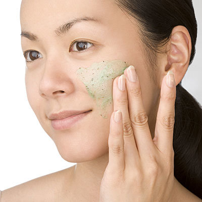
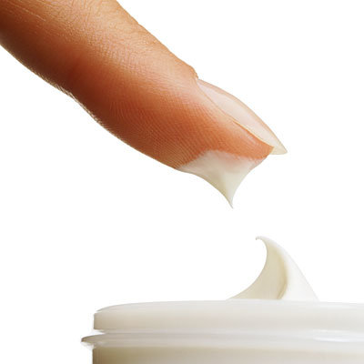
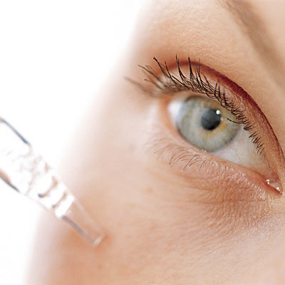
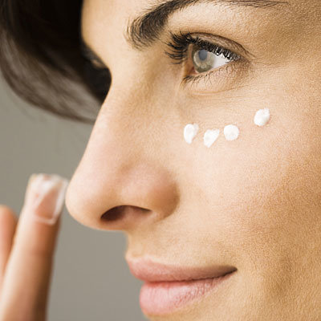
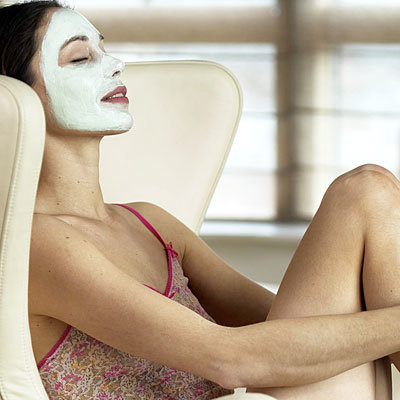

From cleansers to eye cream, a quick-and-dirty guide to all the skin care products you need.
Six must-haves
Overwhelmed by the aesthetic aisle at the drugstore? Looking for a simple, easy-to-follow skin care regimen that fits your hectic schedule?
Look no further. Here, our editors cut through the clutter and break down the top six skin care products that should be in every woman's medicine cabinet. (Plus, they'll tell you how to use 'em.)
Cleansers

Never hit the sack without cleansing snoozing with makeup on can clog pores and cause premature aging and breakouts. Use warm water to loosen dirt and clogged pores, then apply a dime-size amount of cleanser to the skin. Gently massage away residue and rinse with cool or lukewarm water. Be sure to remove eye makeup with a proper remover.
Choose a cleanser that is appropriate for your particular skin type. Milky, cream cleansers are best for dry skin, while gel formulas work with oily complexions. Tip for oily gals: Use an alcohol-free toner after cleansing to remove excess oils.Exfoliators
Want smooth skin with a healthy glow? Facial scrubs or exfoliators are must-have items. They help speed up new skin cell production by clearing away old skin cells. Plus, they unclog pores.
Sensitive skin tip: Avoid scrubs with scratchy grains. Look for exfoliators made with natural fruit enzymes?they dissolve dead skin cells sans irritating microbeads.
How often should you exfoliate? Depends on your skin type. Do it once or twice a week if you have normal or dry skin and three to four times a week if you have oily or combination skin.
Moisturizer

Apply a moisturizer after your morning rinse. For daytime choose a light formula that has a broad-spectrum sunscreen with a minimum SPF of 15. It will help the skin retain moisture and protect against UVA/UVB rays.
Bedtime calls for a thicker, richer formula. Night creams should contain collagen, elastin, and essential lipids to help refresh your face while you sleep. Gently apply a dime-size dab to your skin and use an upward, circular motion to lightly massage the cream into your face.
Skin care extra: Spray on a facial toner (rose water works wonders) and follow immediately with moisturizer for extra hydration.
Serums

Need to tackle a specific skin care problem? Serums are key. Unlike moisturizers (which have larger molecules), these highly concentrated fluids penetrate deeper into the skin, delivering nutrients as well as hydration.
Purchase serums according to your specific need, whether it's for anti-aging, brightening, or even acne. As for application, slosh on the product before the moisturizer a little goes a long way. Feel free to layer if you want to focus on more than one skin concern.
Eye cream

Do you wake up with puffy, dark circles under your eyes? Dot on some eye cream! Formulated for specific eye area concerns, eye creams add moisture, address fine lines and wrinkles, and keep you from looking like a raccoon.
Look for a gel formula (with caffeine, preferably) if you have oily skin and/or puffiness. The lighter consistency won?t turn greasy but still prevents surface dryness. Dry skin gals should stick to balmy textures. For dark circles try a cream with vitamin K.
Gently pat your cream, day and night, along the ocular bone around the outer edge of your eye?before applying your moisturizer.
Masks

Love the spa but don't have the time? Give yourself an at-home facial at least once a week. All you need is 10 minutes and a mask. The benefits are endless! Unlike regular cleansing that remove surface dirt, facial masks draw out impurities from beneath the top layers of the epidermis. They also exfoliate, tone, hydrate, protect, and leave skin feeling smooth and soft.
Like serums, masks can target specific skin needs whether they're lack of hydration, dullness, blemishes, or anti-aging. Quick tip for sensitive skin: Test a skin patch (inside of elbow) with your desired mask 24 hours prior to putting it on your face to avoid any unexpected reactions.
Credits to: health
Contact
EMAIL: support@easyhairtips.com
Copy right 2017 Easy Hair Tips. All rights reserved. Developed by Easy Hair Tips